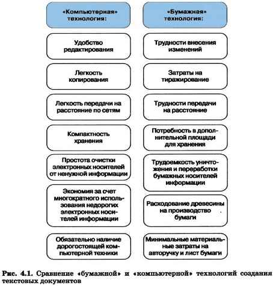
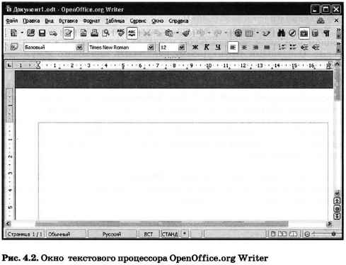

4.1.1. Текстовый документ и его структура
Из курса истории вам известно, какую огромную роль в развитии человечества сыграло возникновение письменности, позволившей зафиксировать устное слово с помощью букв-знаков. Надписи на камне, папирусе, бумаге — не просто сообщения, дошедшие до нас через века. Это документы, позволяющие нам судить о том, как жили люди в ту или иную эпоху, о чём они думали, что их интересовало.
Слово «документ» переводится с латинского как «свидетельство», «доказательство». Первоначально оно означало письменное подтверждение событий или фактов. Например, факт рождения каждого человека документально оформляется в виде свидетельства о рождении; по окончании школы вы получите аттестат — документ, подтверждающий ваше образование, и т. д.
Современное понятие документа значительно шире, чем «бумага, заверенная печатью и подписью». Текст является одной из важнейших форм представления информации об окружающей действительности. Под текстовым документом сегодня понимается информация, представленная на бумажном, электронном или ином материальном носителе в текстовой форме. Текстовый документ может быть статьёй, докладом, рассказом, стихотворением, объявлением, ведомостью, инструкцией, справкой и т. д.
Любой текстовый документ состоит из разделов (хотя бы из одного), которые, в свою очередь, могут содержать подразделы и т. д. Например, ваш учебник состоит из пяти крупных разделов — глав; каждая глава состоит из параграфов; параграфы разбиты на пункты. Глава, параграф, пункт — это примеры разделов. Каждый раздел имеет название или заголовок. Различают заголовки разделов 1-го уровня (например, названия глав), 2-го уровня (названия параграфов), 3-го уровня (названия пунктов) и т. д. Названия разделов разных уровней составляют оглавление документа.
Текст внутри раздела по смыслу разбивается на абзацы. Чаще всего каждый новый абзац начинается с красной строки. В этом пункте (4.1.1) выделено 7 абзацев.
В абзаце можно выделить отдельные строки, слова и символы — символьные структурные элементы.
Документ кроме текста может содержать рисунки, таблицы, схемы и т. д.
4.1.2. Технологии подготовки текстовых документов
На протяжении тысячелетий люди записывают информацию. В течение этого времени менялось и то, на чём записывали информацию, и то, с помощью чего это делали. Но не менялось главное: чтобы внести изменения в текст, его надо было переписать. А это очень длительный и трудоёмкий процесс.
Появление компьютеров коренным образом изменило технологию письма. На смену технологии создания рукописных и машинописных документов на бумаге («бумажная» технология) сегодня пришла «компьютерная» технология. С помощью специальных компьютерных программ можно создать любой текст, при необходимости внести в него изменения, не переписывая текст заново, записать текст в долговременную память компьютера для длительного хранения, отпечатать на принтере какое угодно количество копий текста без его повторного ввода или отправить текст с помощью электронной почты на другие компьютеры.
«Компьютерная» технология обладает рядом преимуществ по сравнению с технологией «бумажной». Давайте сравним эти технологии (рис. 4.1).
Большинство текстов, создаваемых на компьютере, выводятся на печать и используются в традиционной бумажной форме (документы на всевозможных бланках, газеты, журналы, учебники, справочники, научно-популярная и художественная литература и пр.). Наряду с этим в последнее время широкое распространение получили электронные книги — компактные устройства, предназначенные для отображения текстовой информации, представленной в электронном виде.
Можно указать ряд преимуществ электронных книг перед традиционными:
- электронная книга позволяет отображать не только текст, но и картинки, клипы; встроенные программы-синтезаторы речи позволяют озвучивать тексты;
- в электронной книге может быть реализован поиск по тексту, переходы по гиперссылкам, отображение примечаний читателя; в ней можно изменять размер шрифта;
- в одном устройстве могут храниться тысячи книг; такую «библиотеку» значительно проще транспортировать по сравнению с её печатным аналогом.
Основные недостатки современных электронных книг:
- сравнительно высокая стоимость;
- большая чувствительность к физическому воздействию, чем у печатных книг;
- менее высокая контрастность изображения по сравнению с изображением на бумаге.
4.1.3. Компьютерные инструменты создания текстовых документов
Подготовка текстов — одна из самых распространённых сфер применения компьютеров. На любом компьютере установлены специальные программы для создания текстовых документов.
Текстовый редактор — это прикладная программа для создания и обработки текстовых документов.
Существуют простые текстовые редакторы и текстовые редакторы с расширенными возможностями (текстовые процессоры).
Простой текстовый редактор удобен для создания небольших несложных по структуре и оформлению текстов. Такие тексты состоят из букв, цифр, знаков препинания и специальных символов, которые можно ввести с помощью клавиатуры компьютера. Таблицы, формулы, схемы, чертежи простой текстовый редактор обрабатывать не может.
Примером простого текстового редактора является программа Блокнот. Наиболее часто она используется для просмотра и редактирования текстовых файлов, имеющих расширение txt. В программе Блокнот реализован минимум возможностей для оформления текстового документа. Многие пользователи применяют программу Блокнот в качестве простого инструмента для создания web-страниц.?
Текстовый процессор — это текстовый редактор с широкими возможностями, позволяющий не только писать письма, рассказы, стихи, доклады, статьи для школьной газеты, но и выполнять автоматическую проверку правописания, изменять вид и размер шрифта, включать в документ таблицы, формулы, рисунки, схемы, звуковые фрагменты и многое другое.
Примерами текстовых процессоров могут служить:
- Writer, входящий в состав пакета OpenOffice.org;
- Word, входящий в состав пакета Microsoft Office.
Для подготовки буклетов, брошюр, газет, журналов и книг используются такие мощные профессиональные программные средства, как издательские системы.
Окна текстовых процессоров имеют типовую структуру. Рассмотрим её на примере окна текстового процессора OpenOffice.org Writer (рис. 4.2).
Вдоль верхнего края окна приложения располагается строка заголовка, содержащая имя документа, имя программы и кнопки управления.
Ниже строки заголовка расположена строка меню, содержащая имена групп команд, объединённых по функциональному признаку.
Под строкой меню может находиться несколько панелей инструментов, в том числе Стандартная и Форматирование.
Далее следует градуированная в сантиметрах линейка, с помощью которой определяются границы документа.
Рабочая область — это основная часть окна, предназначенная для создания документа и работы с ним. В рабочем поле находится курсор, чаще всего имеющий вид вертикальной линии, указывающей позицию рабочего поля, в которую будет помещён вводимый символ или другой элемент документа.
В строке состояния (нижняя часть окна) выводится справочная информация; там же указывается номер страницы, в которой расположен курсор.
САМОЕ ГЛАВНОЕ
Текстовый документ — это представленная на бумажном, электронном или ином материальном носителе информация в текстовой форме. Основными структурными единицами текстового документа являются раздел, абзац, строка, слово, символ.
На смену технологии, предполагающей создание рукописных и машинописных документов на бумаге («бумажная» технология), сегодня пришла «компьютерная» технология: документы, созданные с помощью специальных компьютерных программ, выводятся на бумагу посредством подключаемых к компьютеру печатающих устройств или хранятся на устройствах внешней памяти и редактируются с помощью компьютера.
Компьютерные инструменты создания текстовых документов можно разделить на простые текстовые редакторы, текстовые процессоры и издательские системы.